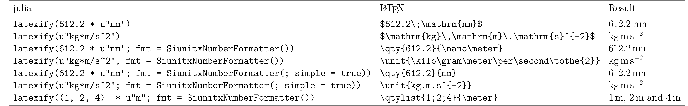
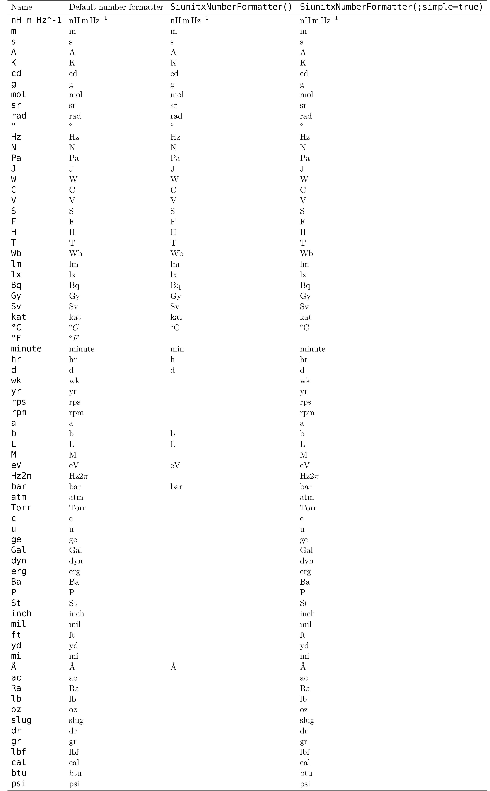

Latexify extension
Unitful has an extension for Latexify, which was formerly implemented as a separate package called UnitfulLatexify.jl.
The default usage is pretty intuitive:
using Unitful, Latexify
a = 9.82u"m/s^2"
t = 4u"s"
x = a*t^2
latexify(x)\[157.12\,\mathrm{m}\]
or more usefully:
latexify(:(x = a*t^2 = $x))\[x = a \cdot t^{2} = 157.12\,\mathrm{m}\]
This of course also works for Units objects by themselves:
latexify(u"kg*m")\[\mathrm{kg}\,\mathrm{m}\]
Some more usage examples:

Arrays
Because Latexify is recursive, an array of unitful quantities is shown as expected:
latexify([12u"m", 1u"m^2", 4u"m^3"])\[\left[ \begin{array}{c} 12\,\mathrm{m} \\ 1\,\mathrm{m}^{2} \\ 4\,\mathrm{m}^{3} \\ \end{array} \right]\]
A special case is an array where all elements have the same unit, and here the extension does some extra work:
latexify([1, 2, 3]u"cm")\[\left[ \begin{array}{c} 1 \\ 2 \\ 3 \\ \end{array} \right]\,\mathrm{cm}\]
siunitx.sty
If you are exporting your numbers to an actual LaTeX document, you will of course want to use the commands from siunitx.sty rather than the \mathrm style used by default. To this end you can use Latexify's fmt=SiunitxNumberFormatter for \qty{8}{\second\meter\per\kilo\gram} style and fmt=SiunitxNumberFormatter(simple=true) for \qty{8}{s.m/kg}. Like other Latexify keywords, this can be set to be a default by using set_default(fmt=SiunitxNumberFormatter()), or given with each latexification command:
latexify(612.2u"nm"; fmt=SiunitxNumberFormatter()) # This will not render right without the `siunitx` package\qty{612.2}{\nano\meter}Lists
Another thing that siunitx does uniquely is lists and ranges of quantities. To get siunitx's list behavior, pass a tuple instead of an array; if you want a tuple to be written as an array instead, use collect(x) or [x...] to convert it into an array first.
latexify((1, 2, 3).*u"m")\begin{equation}
\left[
\begin{array}{c}
1 \\
2 \\
3 \\
\end{array}
\right]\,\mathrm{m}
\end{equation}latexify((1, 2, 3).*u"m"; fmt=SiunitxNumberFormatter())\qtylist{1;2;3}{\meter}latexify(collect((1, 2, 3).*u"m"); fmt=SiunitxNumberFormatter())\begin{equation}
\left[
\begin{array}{c}
\num{1} \\
\num{2} \\
\num{3} \\
\end{array}
\right]\,\unit{\meter}
\end{equation}Plots labels
This extension also interfaces with Plots by way of implementing a two-argument (label, unit) recipe:
latexify("v", u"km/s")\[v\;\left/\;\mathrm{km}\,\mathrm{s}^{-1}\right.\]
This enables this dreamlike example:
using Unitful, Plots, Latexify
gr()
default(fontfamily="Computer Modern")
m = randn(10)u"kg"
v = randn(10)u"m/s"
plot(m, v; xguide="\\mathrm{mass}", yguide="v_x", unitformat=latexify)This format, $v_x\;\left/\;\mathrm{m}\,\mathrm{s}^{-1}\right.$, is subject to personal preference. A couple other defaults are provided:
:slash, $v_x\;\left/\;\mathrm{m}\,\mathrm{s}^{-1}\right.$:round, $v_x\;\left(\mathrm{m}\,\mathrm{s}^{-1}\right)$:square, $v_x\;\left[\mathrm{m}\,\mathrm{s}^{-1}\right]$:frac, $\frac{v_x}{\mathrm{m}\,\mathrm{s}^{-1}}$
To use these in a plot call, either pass a function like
(l,u) -> latexify(l, u; labelformat=:slash)` or call Latexify.set_default(labelformat=:square), then pass latexify as your unitformat.
args = (m, v)
kwargs = (xguide="\\mathrm{mass}", yguide="v_x", legend=false)
Latexify.set_default(labelformat=:square)
plot(
plot(args...; kwargs..., unitformat=(l,u)->latexify(l, u, labelformat=:slash)),
plot(args...; kwargs..., unitformat=(l, u)->latexify(l, u, labelformat=:round)),
plot(args...; kwargs..., unitformat=latexify),
plot(args...; kwargs..., unitformat=(l, u)->latexify(l, u, labelformat=:frac)),
plot(args...; kwargs..., unitformat=(l, u)->string("\$", l, " \\rightarrow ", latexraw(u), "\$")),
)Pluto notebooks
One use case is in Pluto notebooks, where you can write
Markdown.parse("""
The period is $(@latexrun T = $(2.5u"ms")), so the frequency is $(@latexdefine f = 1/T post=u"kHz").
""")which renders as
The period is $T = 2.5\;\mathrm{ms}$, so the frequency is $f = \frac{1}{T} = 0.4\;\mathrm{kHz}$.
Note that the quantity has to be interpolated (put inside a dollar-parenthesis), or Latexify will interpret it as a multiplication between a number and a call to @u_str.
Per-modes
In mathrm-mode, one might prefer $\mathrm{J}\,/\,\mathrm{kg}$ or $\frac{\mathrm{J}}{\mathrm{kg}}$ over $\mathrm{J}\,\mathrm{kg}^{-1}$. This can be achieved by supplying permode=:slash or permode=:frac respectively, rather than the default permode=:power.
These will have no effect with SiunitxNumberFormatter, because the latex package handles this for you, and you can set it in your document.
New siunitx syntax
The new syntax from siunitx v3 (\qty, \unit rather than \SI, \si) is used by default. If you cannot upgrade siunitx, there's the option to use fmt=SiunitxNumberFormatter(version=2).
A more complete list of defined units
Below is a poorly scraped list of units defined in Unitful and what comes out if you run it through latexify. Feel free to create an issue if there's a unit missing or being incorrectly rendered (and suggest a better $\LaTeX$ representation if you know one).
